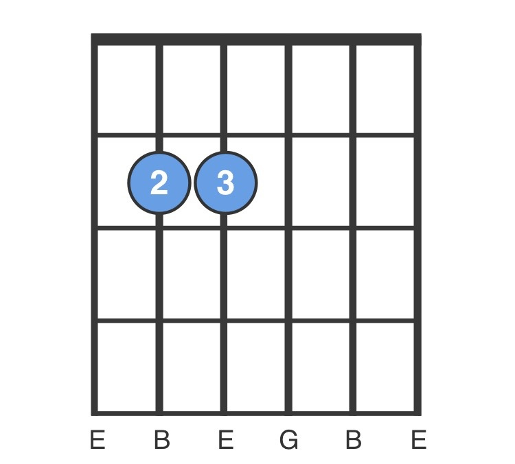
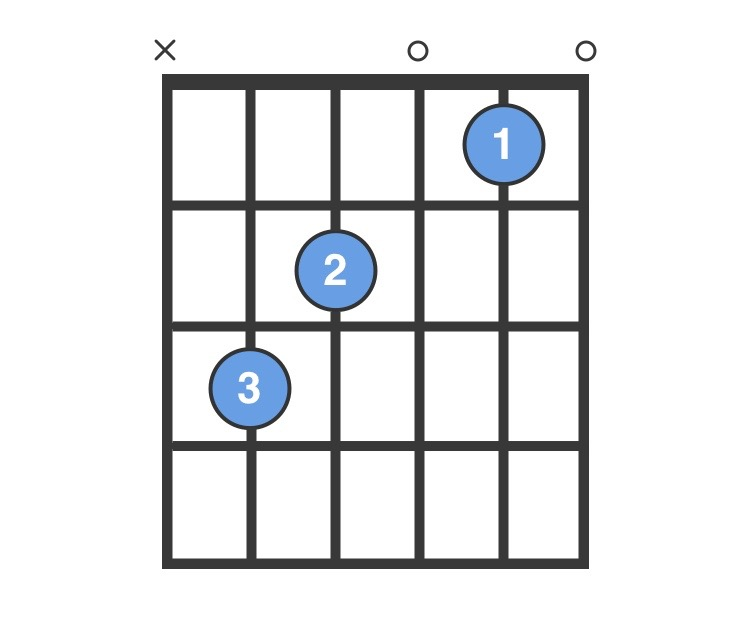
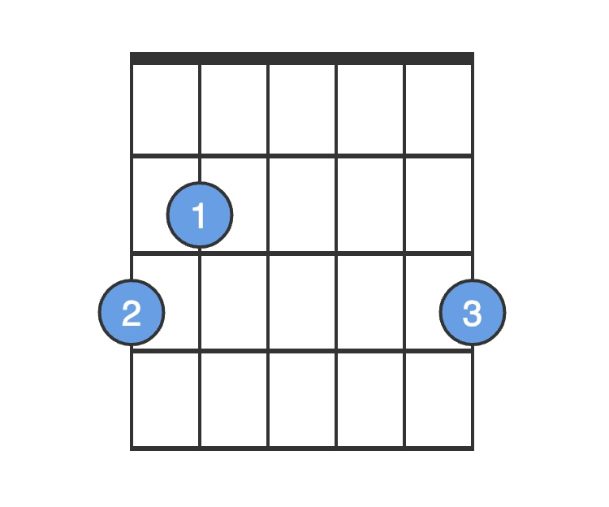
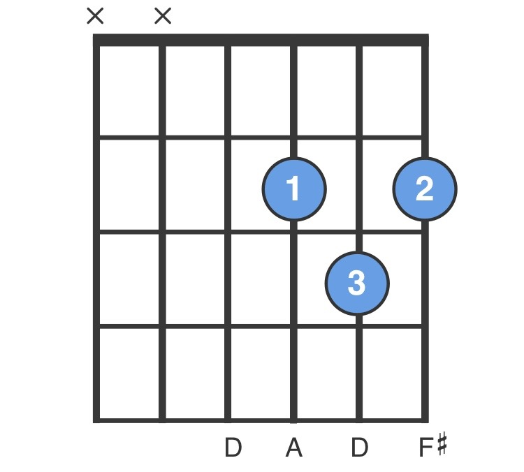
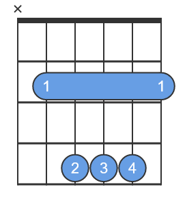

Green Day - Holiday
Kapodaster: 1 próg
[Intro]
| e C | G D | x6
[Verse 1]
e C G D
Hear the sound of the falling rain
e C G B e
Coming down like an Armageddon flame (Hey!)
C G D B
The shame, the ones who died without a name
e C G D
Hear the dogs howling out of key
e C G B e
To a hymn called "Faith and Misery" (Hey!)
C G D B
And bleed, the company lost the war today
[Chorus]
e C G D
I beg to dream and differ from the hollow lies
e C G B
This is the dawning of the rest of our lives
e C G D e C G D
On holiday
[Verse 2]
e C G D
Hear the drum pounding out of time
e C G B e
Another protestor has crossed the line (Hey!)
C G D B
To find, the money's on the other side
e C G D
Can I get another Amen? (Amen!)
e C G B e
There's a flag wrapped around a score of men (Hey!)
C G D B
A gag, a plastic bag on a monument
[Chorus]
e C G D
I beg to dream and differ from the hollow lies
e C G B
This is the dawning of the rest of our lives
On holiday